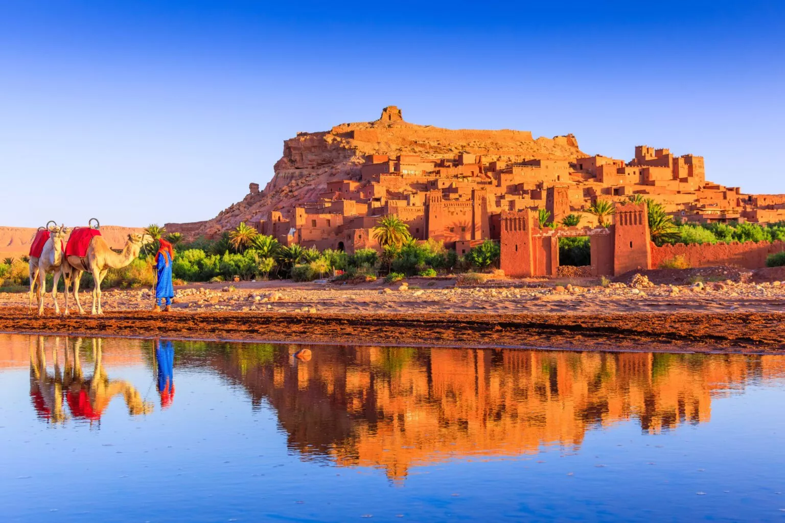
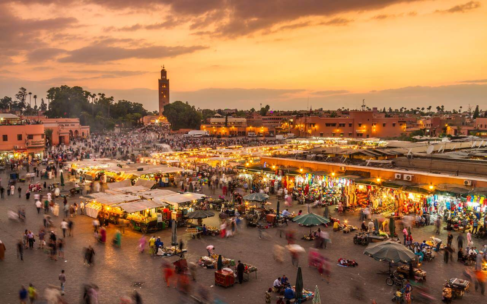
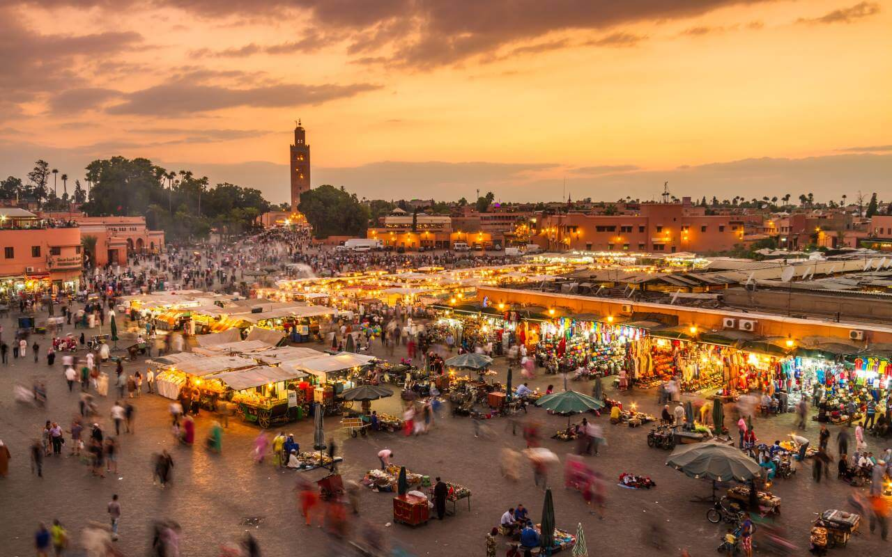

Voyage pédagogique de fin d'année

 
 Bonjour à toutes et à tous, et bienvenue dans notre site web.
Nous allons vous présenter le voyage pédagogique que nous avons organisé pour les étudiants de 3ème année de BUT informatique à l'université de Vélizy.
Ce voyage aura lieu au Maroc, dans un but pédagogique et pour la culture des étudiants.
Nous avons ainsi établi le planning de préparation du voyage :
Vendredi 22 Novembre 2024 : Rencontre avec M. Barreau pour les besoins spécifiques du client.
Janvier 2025 : Élaboration du budget prévisionnel et réservation des billets de train.
Février 2025 : Réservation des hôtels et choix des activités (visites académiques, professionnelles et culturelles).
Avril 2025 : Finalisation des réservations et confirmation des horaires des visites.
Mai 2025 : Collecte des paiements des étudiants et transmission des informations importantes et du programme dans sa globalité.
23 Juin 2025 : Départ d'Orly.